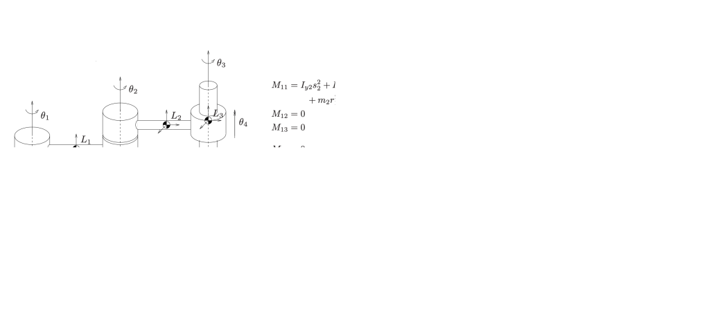

Your browser doesn't support the features required by impress.js, so you are presented with a simplified version of this presentation.
For the best experience please use the latest Chrome, Safari or Firefox browser.
L9: Lagrangian Dynamics
Hao Su
Spring, 2021
The flow and some contents are based on
ECE5463 taught at Ohio State University by Prof. Wei Zhang
Agenda
click to jump to the section.
Dynamics Example: Grasp
- Consider the right grasp problem
-
Assume that we are grasping this box using two arms
-
We apply torques at each joint through the installed motors
-
These torques will be passed to the tips of the fingers.
-
...
Q1: How to compute force at the tips from the torques at joints?
Q2: To keep the box static, what is the balance condition?
Dynamics Example: Grasp
- Parameterization
- \(\theta \in\bb{R}^n\): vector of joint variables
- \(\tau \in\bb{R}^n\): vector of joint forces/torques
- Task
-
Forward dynamics: Determine acceleration \(\ddot{\theta}\) given the state \((\theta, \dot{\theta})\) and the joint forces/torques
\[\ddot{\theta}=\rm{FD}(\tau; \theta, \dot{\theta})\]
-
Inverse dynamics: Finding torques/forces given state \(\theta, \dot{\theta}\) and desired acceleration \(\ddot{\theta}\)
\[
\tau=\rm{ID}(\ddot{\theta}; \theta, \dot{\theta})
\]
Lagrangian vs. Newton-Euler Methods
- There are typically two ways to derive the equation of motion for an
open-chain robot: Lagrangian method and Newton-Euler method
Lagrangian Formulation
- Energy-based method
- Often used for study of dynamic properties and analysis of control methods
Newton-Euler Formulation
- Balance of forces/torques
- Often used for numerical solution of forward/inverse dynamics
Lagrangian Method
Generalized Coordinates and Forces
- Consider \(k\) particles. Let \(\mv{f}_i\) be the force acting on the \(i\)th particle, \(p_i\) be its position.
- Now consider the case in which some particles are rigidly connected, imposing constraints on their positions
\[
\alpha_j(p_1, \ldots, p_k)=0, \quad j=1,\ldots, n_c
\]
where \(n_c\) is the number of constraints
- \(k\) particles in \(\bb{R}^3\) under \(n_c\) constraints \(\Rightarrow 3k-n_c\) degree of freedom
- We introduce \(n:=3k-n_c\) independent variables \(q_i\)'s, called the generalized coordinates
\[
\left\{
\begin{aligned}
&\alpha_j(p_1,\ldots,p_k)=0\\
&j=1,\ldots,n_c
\end{aligned}
\right.
\qquad
\Leftrightarrow
\qquad
\left\{
\begin{aligned}
&p_i=\gamma_i(q_1,\ldots,q_n)\\
&i=1,\ldots,k
\end{aligned}
\right.
\]
Generalized Coordinates and Forces
- To describe equation of motion in terms of generalized coordinates, we also need to express external forces applied to the system in terms components along generalized coordinates. These "forces" are called generalized forces.
- Generalized force \(\mv{F}_i\) and coordinate rate \(\dot{q}_i\) are dual to each other in the sense that \(\mv{F}^T\dot{q}\) corresponds to power, the derivative of energy
- The equation of motion of the \(k\)-particle system can thus be described in terms of \(3k-n_c\) independent variables instead of the \(3k\) position variables subject to \(n_c\) constraints.
- This idea of handling constraints can be extended to interconnected rigid bodies (robot arm).
Lagrangian Function
- Now let \(q\in\bb{R}^n\) be the generalized coordinates.
- Lagrangian function: \(L(q, \dot{q})=T(q,\dot{q})-V(q)\)
- \(T(q,\dot{q})\): kinetic energy of system
- \(V(q)\): potential energy (given by some conservative force, e.g., gravity, electrostatic force)
The Principle of Stationary Action
- Given a pair of time instants, \(t_1\) and \(t_2\)
- What is the curve \(\mv{q}:[t_1, t_2]\to \cal{C}\) in the generalized coordinate space \(\cal{C}\)?
- Action is defined to be a functional of \(\mv{q}(t)\):
\[
S[\mv{q}]=\int_{t_1}^{t_2} L(q, \dot{q}) \d{t}
=\int_{t_1}^{t_2} [T(\mv{q}, \dot{\mv{q}})-V(\mv{q})] \d{t}
\]
The Principle of Stationary Action
- The actual curve \(\mv{q}(t)\) is a stationary point of the \(S[\mv{q}]\):
\[
\forall \mv{\delta}:[t_1, t_2]\to \cal{C},\quad \lim_{\epsilon\to 0}\frac{1}{\epsilon}(S[\mv{q}+\epsilon \mv{\delta}]-S [\mv{q}])=0 \tag{1}
\]
- Note: Treating $\mv{q}$ as a variable, and (1) is an extension of the first-order optimality condition that we use in calculus: \[
\nabla_{q}S[q]=0
\]
- Using variational method, condition (1) becomes
\[
\frac{\d{}}{\d{t}}\frac{\partial L}{\partial \dot{q}}-\frac{\partial L}{\partial q}=0
\]
A Simple Example
- Consider a point with mass $m$ and velocity $v$ is falling down to the ground due to gravity, $g$ is gravitational acceleration
\[
L = \frac{1}{2}mv^2 - mgh
\]
-
The generalized coordinate is $h$ and no external force are applied on this system, then
\[
\frac{d}{dt}\frac{\partial L}{\partial \dot{q}} = ma, \frac{\partial L}{\partial q} = -mg
\]
-
Therefore we get
\[
ma + mg = 0
\]
Euler-Lagrange Equation
- When there are external non-conservative generalized force \(\mv{F}\in\bb{R}^n\) added to the system (e.g., torque at robot arm joints), we have the following Euler-Lagrange equation:
\[
\mv{F}=\frac{\d{}}{\d{t}}\frac{\partial L}{\partial \dot{q}}-\frac{\partial L}{\partial q}\tag{Euler-Lagrange Equation}
\]
Logic behind Concepts in Lagrangian Dynamics
graph TD
q["q (gen. coordinate)"]
v["q̇ (gen. velocity)"]
m["m (gen. inertia)"]
T["T (kinetic energy)"]
f["F (gen. force)"]
P[power]
m-->T;
q-->T;
v-->T;
T-->P;
dt-->P;
q-->v;
dt-->v;
v--dual-->f;
P-->f;
Example: Inverted Pendulum
(describe using spatial frame)
Inverted Pendulum
- Kinetic energy: $T=\frac{1}{2}m(\dot{\theta} l)^2$
- Potential energy: $V=mgl \cos\theta$
A schematic drawing of the inverted pendulum. The rod is considered massless.
Generalized Coordinates and Force
- The generalized coordinate of the system is $\theta$.
- What is the generalized force?
- Recall that the inner product of generalized force and generalized velocity is the input power, so we think from the perspective of power
- Assume the coordinate of $m$ is $(x, y)$, so $P=f \frac{\d{x}}{\d{t}}$
- If $F$ is a generalized force, then $F \dot{q} = F \frac{\d{\theta}}{\d{t}} = P=f\frac{\d{x}}{\d{t}}$
- Therefore, $F=f\frac{\d{x}}{\d{\theta}}$
- But $x=-l\sin\theta$, so $F=-fl\cos\theta$.
A schematic drawing of the inverted pendulum. The rod is considered massless.
Lagrangian Equation
\[
\begin{aligned}
L&=T-V=\frac{1}{2}ml^2\dot{\theta}^2-mgl \cos\theta\\
F&=-fl\cos\theta
\end{aligned}
\]
- Plug in $\lagrangian$, and we have
\[
ml\ddot{\theta}=-f\cos\theta+mg\sin\theta
\]
- In Newton's system, the left is $ma$ and right is the total force tangential to $\vec l$.
A schematic drawing of the inverted pendulum. The rod is considered massless.
Example: Cart Pole
Cart Pole
- Kinetic energy: $T=\frac{1}{2}M v_1^2+\frac{1}{2}m v_2^2$
- Assume the joint position is $[x(t), 0]^T$, then
- $v_1^2=\dot{x}^2$
- $v_2^2=\left(\ddt{\left(x-\ell \sin \theta \right)}\right)^2+\left(\ddt{\left(\ell \cos \theta \right)}\right)^2$
- Further computation shows that \[
T={\frac {1}{2}}\left(M+m\right){\dot {x}}^{2}-m\ell {\dot {x}}{\dot {\theta }}\cos \theta +{\frac {1}{2}}m\ell ^{2}{\dot {\theta }}^{2}
\]
- Potential energy: $V=mgl\cos\theta$

A schematic drawing of the inverted pendulum on a cart. The rod is considered massless.
https://en.wikipedia.org/wiki/Inverted_pendulum
Generalized Coordinates and Force
- First of all, note that there is an external force $F$, and the joint is an Underactuated joint (i.e., no torque at the joint)
- The generalized coordinates of the system are $q=[x,\theta]^T$, each should have a generalized force.
- What are the generalized forces?
- The input power is $P=f\frac{\d{x}}{\d{t}}$
- Therefore, $[f, 0]^T$ is the generalized force dual to $[x,\theta]^T$
A schematic drawing of the inverted pendulum on a cart. The rod is considered massless.
https://en.wikipedia.org/wiki/Inverted_pendulum
Lagrangian Equation
\[
\aligned{
L&=T-V\\
&={\frac {1}{2}}\left(M+m\right){\dot {x}}^{2}-m\ell {\dot {x}}{\dot {\theta }}\cos \theta +{\frac {1}{2}}m\ell ^{2}{\dot {\theta }}^{2}-mgl\cos\theta\\
F&=[f,0]^T
}
\]
- Plug in $\lagrangian$, and we have
\[
(M+m)\ddot{x}-ml\cos\theta\ddot{\theta}+ml\sin\theta\dot{\theta}^2=f\\
l\ddot{\theta}-g\sin\theta-\ddot{x}\cos\theta=0
\]
A schematic drawing of the inverted pendulum on a cart. The rod is considered massless.
https://en.wikipedia.org/wiki/Inverted_pendulum
Example: Single-Object Dynamics
Setup
- Consider a moving body that is only affected by a force-torque pair (in the sense of the conventional force and torque)

Prep: Derivative of Acceleration
- Like for velocity, we use the following rule to compute the gradient of velocity in an arbitrary observer's frame
- We introduce $t_0$ to indicate which frame is cloned when calculating the derivative
\[
\mv{a}^{o(t_0)}_{b(t_0)}=\left.\frac{\d{}}{\d{t}}\mv{v}^{o(t_0)}_{s(t_0)\to \color{red}{b(t)}}\right\vert_{t=t_0}
\]
- Different from the definition of velocity, acceleration only has one subscript
- We clone a frame $s(t_0)$ when taking the derivative, so the definition of acceleration is invariant to $s(t)$
Prep: Derivative of Acceleration
- Spatial acceleration (spatial frame is an inertia frame):
\(
\mv{a}^{s(t_0)}_{b(t_0)}=\left.\frac{\d{}}{\d{t}}\mv{v}^{s(t_0)}_{s(t_0)\to \color{red}{b(t)}}\right\vert_{t=t_0}
\)
- Body acceleration:
\[
\because
\frac{\d{}}{\d{t}}\mv{v}^{b(t)}_{s(t_0)\to b(t)}=\frac{\d{}}{\d{t}}R^{b(t)}_{b(t)\to b(t_0)}\mv{v}^{b(t_0)}_{s(t_0)\to b(t)}=-[\omega^{b(t)}]\mv{v}^{b(t)}_{s(t)\to b(t)} + \frac{\d{}}{\d{t}}\mv{v}^{b(t_0)}_{s(t_0)\to b(t)}
\]
\[
\therefore
\boxed{
\mv{a}^{b(t_0)}_{b(t_0)}=\left.\frac{\d{}}{\d{t}}\mv{v}^{b(t_0)}_{s(t_0)\to \color{red}{b(t)}}\right\vert_{t=t_0}
=\left.\frac{\d{}}{\d{t}}\mv{v}^{\color{red}{b(t)}}_{s(t_0)\to \color{red}{b(t)}}\right\vert_{t=t_0}+[\mv{\omega}^{b(t_0)}]\mv{v}^{b(t_0)}_{s(t_0)\to b(t_0)}}
\]
- Using $\mv{v}^{s(t)}_{s(t)\to b(t)}=R^{s(t)}_{s(t)\to b(t)}\mv{v}^{b(t)}_{s(t)\to b(t)}$, you can verify that $R^{b(t)}_{b(t)\to s(t)}\mv{a}^{s(t)}=\mv{a}^{b(t)}$ (so that $\mv{f}^o=m\mv{a}^o$ for both the spatial and body frames).
- The second term in the body-frame acceleration is the Coriolis acceleration.
Body-Frame Lagrangian Derivation
- Recall that the kinetic energy $T$ is:
\[
T=\frac{1}{2} (\mv{\xi}^{b(t)}_{s(t)\to b(t)})^T \mv{\f{M}}^{b} \mv{\xi}^{b(t)}_{s(t)\to b(t)}
\]
where
\(
\mv{\f{M}}^b=\begin{bmatrix}
m \rm{Id}_{3\times 3} & 0\\
0 & \mv{I}^{b}
\end{bmatrix}\in\bb{R}^{6\times 6} \mbox{ and }
\mv{\xi}^b=\begin{bmatrix}
\mv{v}^b\\\mv{\omega}^b
\end{bmatrix}
\)
Generalized Velocity and Force
- Recall that we introduced
$
\mv{F}^{b(t)}=
\begin{bmatrix}
\mv{f}^{b(t)}\\\mv{\tau}^{b(t)}
\end{bmatrix}
$ and $(\mv{F}^{b(t)})^T\mv{\xi}^{b(t)}=\frac{\d{T}}{\d{t}}$
- implies that ($\mv{\xi}^{b(t)}$, $\mv{F}^{b(t)}$) is a dual pair
- $\mv{F}^{b(t)}$ is a generalized force and $\mv{\xi}^{b(t)}$ is a generalized velocity
-
Therefore, we can plug them in Euler-Lagrange equation:
$$\lagrangian\tag{Euler-Lagrange Equation}$$
Body-Frame Lagrangian Derivation
- Since the object is only affected by a force-torque pair, there is no potential energy in this problem.
- Lagrangian function: $L=T$
- Therefore, the Lagrangian equation becomes
\[
\frac{\d{}}{\d{t}}\frac{\partial L}{\partial \mv{\xi}^{b(t)}}=\mv{F}^{b(t)}
\]
- Recall that we have derived that
\[
L=\frac{1}{2}(\mv{\xi}^{b(t)})^T \f{M}^{b(t)}\mv{\xi}^{b(t)}=\frac{1}{2} m\|\mv{v}^{b(t)}\|^2+\frac{1}{2}(\mv{\omega}^{b(t)})^T\mv{I}^b\mv{\omega}^{b(t)}
\]
- Therefore,
\(
\frac{\partial L}{\partial \mv{v}^{b(t)}}=m\mv{v}^{b(t)},
\frac{\partial L}{\partial \mv{\omega}^{b(t)}}=\mv{I}^b\mv{\omega}^{b(t)}
\)
Body-Frame Lagrangian Derivation
\[
\ddt\pLp{\mv{\xi}^{b(t)}}=\mv{F}^{b(t)},\qquad
\pLp{\mv{v}^{b(t)}}=m\mv{v}^{b(t)}, \qquad
\pLp{\mv{\omega}^{b(t)}}=\mv{I}^b\mv{\omega}^{b(t)}
\]
- Therefore,
\[
\mv{f}^{b(t_0)}=\ddt\pLp{\mv{v}^{b(t_0)}}=m\ddt \mv{v}^{b(t_0)}_{s(t_0) \to b(t)}=m\left.\ddt \mv{v}^{b(t)}_{s(t_0)\to b(t)}\right\vert_{t=t_0}+m[\omega^{b(t_0)}_{s(t_0)\to b(t_0)}]\mv{v}^{b(t_0)}_{s(t_0)\to b(t_0)}
\]
\[
\mv{\tau}^{b(t_0)}=\ddt\pLp{\mv{\omega}^{b(t_0)}}=\left.\ddt \mv{I}^{b}\mv{\omega}^{b(t)}_{s(t_0)\to b(t)}\right\vert_{t=t_0}=\mv{I}^{b}\left.\ddt \mv{\omega}^{b(t)}_{s(t_0)\to b(t)}\right\vert_{t=t_0} + [\mv{\omega}^{b(t_0)}]\mv{I}^{b}\mv{\omega}^{b(t_0)}
\]
- In matrix form, we have the famous body-frame Newton-Euler equation:
\[
\bm{
m \rm{Id}_{3\times 3} & 0\\
0 & \mv{I}^b
\end{bmatrix}
\begin{bmatrix}
\dot{\mv{v}}^b\\
\dot{\mv{\omega}}^b
}
+
\bm{
\mv{\omega}^b\times m\mv{v}^b\\
\mv{\omega}^b\times \mv{I}^b\mv{\omega}^b
}
=
\bm{
\mv{f}^{b}\\
\mv{\tau}^{b}
}
\]
in which the precise definition of symbols are as above.
Spatial-Frame Lagrangian Derivation
- The kinetic energy $T$ can also be computed by spatial frame velocities:
\[
T=\frac{1}{2} m\|\mv{v}^{s(t)}\|^2+\frac{1}{2}(\mv{\omega}^{s(t)})^T\mv{I}^s\mv{\omega}^{s(t)}
\]
- Force-velocity duality:
$\bm{\mv{f}^{s(t)}\\\mv{\tau}^{s(t)}}$ and $\bm{\mv{v}^{s(t)}\\\mv{\omega}^{s(t)}}$ form a duality pair
- Justification:
- The translational kinetic energy can be justified by $\mv{v}^{s(t)}=R^{s(t)}_{s(t)\to b(t)}\mv{v}^{b(t)}$
- The rotational kinetic energy can be justified by $\mv{\omega}^{s(t)}=R^{s(t)}_{s(t)\to b(t)}\mv{\omega}^{b(t)}$ and $\mv{I}^{s}=R^{s(t)}_{s(t)\to b(t)}\mv{I}^{b}(R^{s(t)}_{s(t)\to b(t)})^T$
- The force-velocity duality can be justified by $\mv{f}^{s(t)}=R^{s(t)}_{s(t)\to b(t)}\mv{f}^{b(t)}$, $\mv{\tau}^{s(t)}=R^{s(t)}_{s(t)\to b(t)}\mv{\tau}^{b(t)}$, and the frame rules for $\mv{v}$ and $\mv{\omega}$
Spatial-Frame Lagrangian Derivation
\[
\pLp{\mv{v}^{s(t)}}=m\mv{v}^{s(t)}, \qquad
\pLp{\mv{\omega}^{s(t)}}=\mv{I}^b\mv{\omega}^{s(t)}
\]
- Therefore,
\[
\mv{f}^{s(t_0)}=\ddt\pLp{\mv{v}^{s(t_0)}}=m\ddt \mv{v}^{s(t_0)}=m\left.\ddt \mv{v}^{s(t_0)}_{s(t_0)\to b(t)}\right\vert_{t=t_0}
\]
\[
\mv{\tau}^{s(t_0)}=\ddt\pLp{\mv{\omega}^{s(t_0)}}=\left.\ddt \mv{I}^{s}\mv{\omega}^{s(t_0)}_{s(t_0)\to b(t)}\right\vert_{t=t_0}
=[\mv{\omega}^{s(t_0)}_{s(t_0)\to b(t_0)}]\mv{I}^{s}\mv{\omega}^{s(t_0)}_{s(t_0)\to b(t_0)}+\mv{I}^{s}\left.\ddt \mv{\omega}^{s(t_0)}_{s(t_0)\to b(t)}\right\vert_{t=t_0}
\]
- In matrix form, we have the famous spatial frame Newton-Euler equation:
\[
\bm{
m \rm{Id}_{3\times 3} & 0\\
0 & \mv{I}^s
\end{bmatrix}
\begin{bmatrix}
\dot{\mv{v}}^s\\
\dot{\mv{\omega}}^s
}
+
\bm{
\color{red}{0}\\
\mv{\omega}^s\times \mv{I}^s\mv{\omega}^s
}
=
\bm{
\mv{f}^{s}\\
\mv{\tau}^{s}
}
\]
in which the precise definition of symbols are as above.
Example: Robot Arm
Robot Arm
- For kinematic chains with $n$ joints, it is convenient and always possible to choose the joint angles $\theta=(\theta_1,\ldots,\theta_n)$ and the joint torques $\tau=(\tau_1,\ldots,\tau_n)$ as the generalized coordinates and generalized forces, respectively.
- If joint $i$ is revolute: $\theta_i$ joint angle and $\tau_i$ is joint torque
- If joint $i$ is prismatic: $\theta_i$ joint position and $\tau_i$ is joint force
- Lagrangian Equations:
\[
\tau_i=\ddt\pLp{\dot{\theta}_i}-\pLp{\theta_i}
\]
Some Notations
For each link $i=1,\ldots,n$, $\cal{F}_i$ is attached to the center of mass of link $i$. All the following quantities are expressed in $\cal{F}_i$
- $\mxi^b_i$: twist of link $i$
- $m_i$: mass; $\mv{I}^b_i$: rotational inertia matrix;
- $\f{M}_i^b=\bm{m_i\rm{Id}_{3\times 3}& 0\\0 & \mv{I}^b_i }$: body inertia matrix
- Kinetic energy of link $i$: $T_i=\frac{1}{2}(\mxi_i^b)^T \f{M}^b_i\mxi_i^b$
- $J^b_i\in\bb{R}^{6\times n}$: body Jacobian of link $i$
Kinetic and Potential Energies
- Total kinetic energy:
\[
T(\theta,\dot{\theta})=\frac{1}{2}\sum_{i=1}^n (\mxi^b_i)^T\f{M}^b_i\mxi^b_i=\frac{1}{2}\dot{\theta}^T\underbrace{(\sum_{i=1}^n(J^b_i(\theta)\f{M}^b_i J^b_i(\theta)))}_{\mv{M}^b(\theta)}\dot{\theta}:=\frac{1}{2}\dot{\theta}^T\mv{M}^b(\theta)\dot{\theta}
\]
- Potential energy:
\[
V(\theta)=\sum_{i=1}^n m_i g h_i(\theta)
\]
- $h_i(\theta)$: height of center of mass of link $i$
Lagrangian Equation
- Plug $L=T-V$ into $\lagrangian$, and we have
- $\tau_i=\ddt\pLp{\dot{\theta}}-\pLp{\theta_i}$
\[
\tau_i=\sum_{j=1}^n M^b_{ij}(\theta)\ddot{\theta}_j+\sum_{j=1}^n\sum_{k=1}^n\Gamma^b_{ijk}(\theta)\dot{\theta}_j\dot{\theta}_k+\frac{\partial V}{\partial \theta_i}
\]
$M^b_{ij}$ is the $(i, j)$-th entry of matrix $\mv{M}^b$
- $\Gamma^b_{ijk}(\theta)$ is called the Christoffel symbols of the first kind
\[
\Gamma^b_{ijk}(\theta)=\frac{1}{2}\left(\frac{\partial M^b_{ij}}{\partial \theta_k}+\frac{\partial M^b_{ik}}{\partial \theta_j}-\frac{\partial M^b_{jk}}{\partial \theta_i}\right)
\]
Lagrangian Equation
- Lagrangian equation in vector form:
\[
\tau=\mv{M}^b(\theta)\ddot{\theta}+C^b(\theta,\dot{\theta})\dot{\theta}+g^b(\theta)
\]
- $C^b_{ij}(\theta,\dot{\theta}):=\sum_{k=1}^n \Gamma^b_{ijk}\dot{\theta}_k$ is called the Coriolis matrix
- Recall that in the body-frame Newton Euler equation, we also have a Coriolis term that comes from the derivate of rotational inertia. It was used to compensate for the rotational acceleration of the body frame
- This $C^b_{ij}(\theta,\dot{\theta})$ also comes from taking the derivative of $\mv{M}^b$ w.r.t. $\theta$. Because $\mv{M}^b$ and $\mxi^b$ are described in the body frame in our derivation, we also need this Coriolis term to compensate for the movement of the body frame.
- $g^b(\theta)$ is due to gravity in our derivation. If there are other external forces (e.g., friction), it would also show up here.
- Equations for a simple arm

- Equations for PUMA 560 Arm